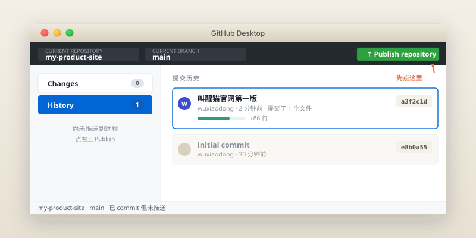
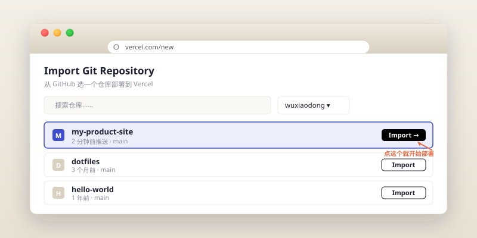
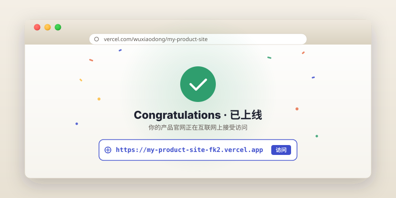

上线:让世界看到你
到这一章为止,你的网站只活在你自己的电脑里。这一章我们要做两件事:把代码搬到 GitHub(代码的网盘),再让 Vercel 自动把它部署成一个真实可访问的网址。完成后,你会拿到一个 https://你的项目名.vercel.app 的链接,把它发给任何人都能打开。
https://my-product-site.vercel.app)、一个 GitHub 仓库存着你的代码、一套"改完推上去自动上线"的工作流。耗时约 30–45 分钟,绝大部分时间在等下载/邮箱验证。
给零基础读者的最快上线路径,只有两个真实选项:Vercel 和 Cloudflare Pages。两者都不需要服务器、不需要备案、不需要付钱,推完代码 60 秒就能拿到公开链接。本教程用 Vercel 作为主路线,因为它的界面对新手最友好。
如果你的目标用户主要在中国大陆,Cloudflare Pages 的访问速度更稳;Vercel 在国内的免费域名 vercel.app 偶尔被劣化,但绑定自己的域名(第 09 章)后能改善很多。
第一步 · 把代码放到 GitHub
GitHub 是什么?它就是"代码的网盘"——只不过这个网盘特别擅长跟踪文件的每一次改动。我们要把第 05 章建好的 my-product-site 这个文件夹,推到 GitHub 上去。
1. 注册 GitHub 账号
打开 github.com,点右上角 Sign up。用邮箱注册一个账号,需要邮箱验证。
注册时它会让你选一个 username,这个用户名会出现在你日后所有项目的网址里(比如 github.com/<你的username>/my-product-site),所以选一个你愿意公开的名字。
如果 github.com 打开转圈半天没反应,这是已知的国内访问问题。建议:1)用桌面版 GitHub Desktop 比浏览器/命令行可靠;2)同样,你需要确保自己的网络环境能稳定访问 github.com。
2. 装 GitHub Desktop(不教命令行)
对于零基础读者,我们直接跳过 git 命令行,用图形界面工具 GitHub Desktop。它是 GitHub 官方做的,稳定且免费。
- 打开 desktop.github.com
- 点 Download for [你的系统],下载安装包
- 双击安装,启动后用第一步注册的 GitHub 账号登录
3. 把已有项目加进来
启动 GitHub Desktop 后,选 Add an Existing Repository from your Hard Drive(从硬盘添加一个已有仓库),然后选我们的 my-product-site 文件夹。
它应该会识别到你在第 05 章已经 git init 过了(那一次让 Codex 帮你做的提交还在),直接把项目加进来。

my-product-site,中间显示历史提交(应该有第 05 章那次"叫醒猫官网第一版"),右上有一个 Publish repository 按钮。4. 点 Publish repository
点右上角的 Publish repository。弹窗里:
- Name:已经填好的
my-product-site,可以改 - Description:可以填或不填
- Keep this code private:勾选与否?本教程建议先不勾,让它先公开。原因:Vercel 部署免费版只允许公开仓库(私有仓库要付费)。等熟悉之后你可以选私有,但要换部署路径,本章不展开。
点 Publish Repository。等几秒,看到底部状态变成"已推送",就成功了。
这时候,在浏览器里访问 https://github.com/<你的username>/my-product-site,应该能看到你的 index.html 文件就静静地躺在那里。这一刻你的代码已经在云端了。
第二步 · 用 Vercel 部署上线
1. 注册 Vercel
打开 vercel.com,点 Sign Up。这里有个小窍门:选 "Continue with GitHub",用 GitHub 账号登录。这样 Vercel 一开始就知道你 GitHub 里有哪些项目,后面 Import 一步搞定。
第一次登录,Vercel 会让你给它授权访问你的 GitHub 仓库——可以选"All Repositories"(所有仓库)或者"Only Select Repositories"(只授权 my-product-site)。后者更稳妥。
2. Import 你的仓库
进入 Vercel 的 Dashboard,点 Add New... → Project。你会看到 GitHub 上的仓库列表,找到 my-product-site,点 Import。

3. Deploy(只需要点一个按钮)
进入配置页面后,你会看到一堆设置(Framework Preset、Build Command、Output Directory……)。不要动任何一个。Vercel 会自动识别我们这是个纯静态 HTML 项目,默认配置就对。
直接点页面右下角的大蓝色按钮 Deploy。
接下来你会看到一个酷炫的进度动画,大约 30 秒到 1 分钟,出现一个庆祝的页面 + 你的网址:

my-product-site-xxx.vercel.app),点击可以打开你的网站。把这个链接发给任何人(微信、朋友圈、邮件)都能打开。即使把你电脑关机,这个网址也不会消失——Vercel 帮你 7×24 小时托管着。这是教程里最值得截图的一刻。
第三步 · 之后怎么更新
这是这一章最妙的地方:从现在开始,你做任何改动,只需要做两件事:
该改的改,该加的加,跟以前一样。
提交完打开 GitHub Desktop,点右上角 Push origin。完成。
大约 30 秒后,你的 vercel.app 链接打开就是最新版了。
试着改一个小地方验证一下。在 Codex 里说:
提交完,打开 GitHub Desktop,你应该看到一个"1 个新提交待推送"的提示,点 Push origin。
然后,等 30 秒,刷新一下你的 vercel.app 链接——首屏文案变了。
第四步 · 国内访问问题(必读)
你把 vercel.app 链接发到工作群或者朋友圈后,可能会有朋友告诉你"打不开啊"。这是真实存在的问题,不是你的网站坏了。
Vercel 默认提供的 *.vercel.app 域名在中国大陆访问偶尔会被部分运营商劣化。最稳的解决方法是绑定一个自己的域名——这正是下一章(第 09 章)的内容。绑了自己的域名之后,国内访问的体验会改善很多。
如果你的目标用户在大陆且对访问稳定性要求很高,可以考虑改用 Cloudflare Pages(操作流程几乎一样)、Netlify,或者国内的 Zeabur。本教程不在主线展开,附录 D 留了入口。
动手试试
不是说说而已。真的去做。
- 从 Vercel 后台复制你的
https://...vercel.app链接 - 分别发给 3 个不同的人(家人、朋友、同事都可以)
- 记下他们的第一句反馈是什么——"挺好看的""这个按钮没用""加载太慢"——这些反馈是你下一阶段改进的金矿
很多人在做产品时跳过这一步,只在小群里说"我做了个东西"但从来不实际发链接。发链接的动作,本身就是一个心理门槛,你跨过它会从此放心地把更多东西发出去。
常见踩坑
GitHub Desktop 登录后看不到我的仓库
- 现象
- 登录了 GitHub Desktop,但找不到刚才用浏览器创建的账号下的项目。
- 原因
- 大概率是你登错了账号,或者你的项目还没创建。
- 解决
- 右上角点你的头像确认是不是你想要的账号。如果是新账号,目前可能空空如也——这正常,我们就是要用这个 GitHub Desktop 把本地项目第一次推上去。
Publish 报错 "remote already exists"
- 现象
- 点 Publish 之后弹错误说远程已存在。
- 原因
- 之前 Codex 帮你做提交时,可能把远程地址也写了上去。
- 解决
- 回到 Codex 说:"我的 git 项目报 remote already exists,请帮我移除现有的 remote。"然后回 GitHub Desktop 重试 Publish。
Vercel Import 时看不到我的仓库
- 现象
- Vercel 仓库列表里没有
my-product-site。 - 原因
- 你只授权了部分仓库,这个不在内。
- 解决
- 在仓库列表上方点 Adjust GitHub App Permissions,把 my-product-site 加进去。或者干脆改成"All Repositories"省事。
Vercel 部署完是 404
- 现象
- vercel.app 链接打开提示 "404: NOT_FOUND"。
- 原因
- 九成是你的
index.html不在仓库根目录,而是被放进了子文件夹。 - 解决
- 进 Vercel Project Settings → General → Root Directory,改成
index.html所在的子文件夹路径,再 Redeploy。或者干脆把index.html挪回根目录。
Vercel 部署失败,显示"Build error"
- 现象
- Deploy 之后显示红色 ERROR,日志里一大堆英文。
- 原因
- 对纯静态 HTML 项目来说,这种情况很少出现。如果出现,通常是某次 Codex 改完代码留下了语法错误。
- 解决
- 把红色日志里前 10 行复制下来,丢回 Codex 说:"Vercel 部署失败,日志在这里,请帮我看看哪里出问题了。"它会读你的代码定位问题。
Push 之后 Vercel 没自动重新部署
- 现象
- 明明 Push 上去了,等了几分钟 Vercel 上的链接还是旧的。
- 原因
- 可能 GitHub 那次推送出错(常见于网络问题),实际没推上去;也可能你看的是浏览器缓存。
- 解决
- 1)去 github.com 上你的项目页,看最新一次提交是不是已经在那;2)强制刷新浏览器(⌘+⇧+R 或 Ctrl+F5);3)Vercel Dashboard 里手动点 Redeploy。
朋友说 vercel.app 链接打不开
- 现象
- 你自己能打开,朋友打不开。
- 原因
- 多半是国内某些运营商对
*.vercel.app的访问劣化。 - 解决
- 这是已知问题,不能让 Vercel 替我们解决。最有效的办法是下一章的内容:绑一个自己的域名,通常就能稳定打开。